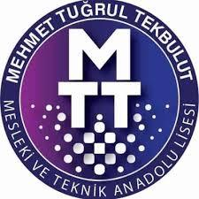

Beni Tanıyın
Yazılıma olan ilgim küçük yaşlarda başladı. Bu ilgim doğrultusunda lise eğitimimi Mehmet Tuğrul Tekbulut Mesleki ve Teknik Anadolu Lisesi Web Programcılığı bölümünde tamamladım. Lise yıllarımdan itibaren HTML, CSS, JavaScript ve PHP ile projeler geliştirirken, freelance olarak web siteleri tasarlayıp geliştirdim. Ayrıca WordPress, Microsoft Office ve Adobe uygulamaları üzerinde deneyim kazandım.
Üniversitede Bilgisayar Programcılığı eğitimimi bölüm ikincisi ve okul üçüncüsü olarak tamamlayarak yazılım alanındaki teknik bilgi birikimimi geliştirdim. Bitirme projem kapsamında web tabanlı bir restoran adisyon ve sipariş takip sistemi geliştirerek uçtan uca bir yazılım projesi geliştirdim.
Kendimi sürekli geliştirmeye önem veren, öğrenmeye açık ve yeni teknolojileri takip eden bir yazılım geliştiricisi olarak kariyerime değer katacak projelerde yer almayı hedefliyorum.
Kariyer Yolculuğum
Üniversite Staj
VBT Yazılım · Ataşehir / İstanbul
Üniversite eğitimim boyunca C, C#, Python, SQL, .NET Core MVC ve makine öğrenmesi alanında eğitim aldım. Üniversite stajımda kurumsal yazılım projelerini deneyimleyerek deneyimli yazılım geliştiricilerinden tecrübe edinme fırsatı buldum.
Lise Staj
ATK Techno Enerji · Gebze / Kocaeli
Lise eğitimim boyunca Web Programcılığı alanında HTML, CSS, JavaScript ve PHP teknolojileri üzerine eğitim aldım. Staj sürecimde WordPress tabanlı web sitesi geliştirme projelerinde görev aldım. Ayrıca kurumsal web sitesi geliştirme ve e-ticaret operasyonlarında deneyim kazandım.
Akademik Geçmişim
Bilgisayar Programcılığı
Bursa Uludağ Üniversitesi
Bölüm ikincisi ve okul üçüncüsü olarak tamamlandı. C, C#, Python, SQL, .NET Core MVC ve makine öğrenmesi üzerine eğitim alındı.
3.91 / 4 GPA
Web Programcılığı
Mehmet Tuğrul Tekbulut MTAL
HTML, CSS, JavaScript ve PHP teknolojileri üzerine eğitim alındı. Freelance web sitesi tasarım ve geliştirme deneyimi kazanıldı.
81 / 100Neler Biliyorum
Teknik Beceriler
Uygulamalar & Dil
Aldığım Eğitimler
BTK Akademi B2 Seviye İngilizce
BTK Akademi C Programlama Dili
BTK Akademi CSS
BTK Akademi HTML5 ile Web Geliştirme
Hadi Konuşalım
Bir proje fikri, staj veya iş fırsatı için benimle iletişime geçmekten çekinmeyin.